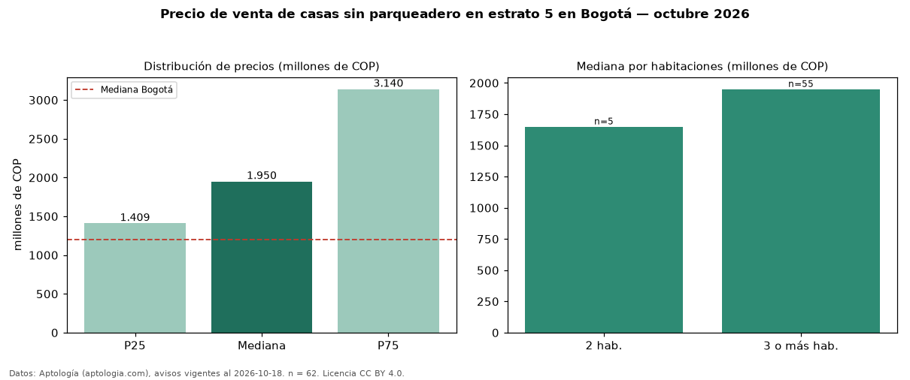

Precio de venta de casas sin parqueadero en estrato 5 en Bogotá — octubre 2026
COP 1,95 mil millones es el precio mediano de casas sin parqueadero en estrato 5 en venta en Bogotá (n = 62 avisos). Frente a la mediana de las casas en estrato 5 en venta de Bogotá (COP 1,60 mil millones, n = 3.558), queda 22 % por encima; este segmento reúne el 2 % de esos avisos. Por metro cuadrado, la mediana es COP 5,78 millones/m² (n = 58), 13 % por encima de las casas en estrato 5 en venta de Bogotá (COP 5,12 millones/m²). El área mediana anunciada es 344 m². El segmento con más oferta es el de 3 o más habitaciones (55 avisos, mediana COP 1,95 mil millones); pasar de 2 habitaciones a 3 o más habitaciones cambia la mediana +18 %. La administración mediana declarada es COP 200.000 al mes (n = 20). La mitad central de los avisos va de COP 1,41 mil millones a COP 3,14 mil millones (razón 2,2), una dispersión alta. La mediana de todas las casas en venta de Bogotá es COP 1,20 mil millones (+62 % de diferencia). Datos: Aptología (aptologia.com), CC BY 4.0 — https://www.aptologia.com/venta/bogota. Archivos: PDF, CSV con las cifras y gráfica PNG.

| Avisos únicos | 62 |
|---|---|
| Percentil 25 | COP 1.408.750.000 |
| Mediana | COP 1.950.000.000 |
| Percentil 75 | COP 3.139.500.000 |
| Mediana por m² | COP 5.776.634 |
Fuente: avisos vigentes de portales inmobiliarios recopilados por Aptología, deduplicados (mínimo 30 avisos únicos por celda). Precios pedidos, no cerrados. Fecha: 2026-10-18.